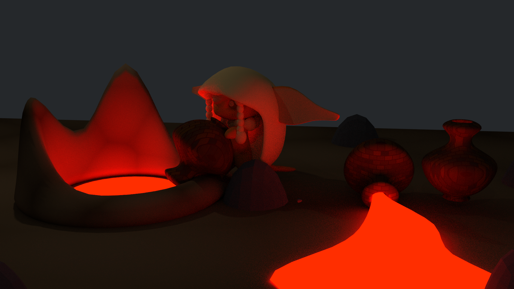
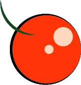

They absorb countless amounts of knowlegde for the other imps of the island to gain intelligence about their world. However, Nimah, a curious orange eyed imp notices some inaccuracies and mysteries regarding her world. She wants answers to these questions, but how will she find them?
A Gluttonous Imps drawing lava into its magic-infused jar. Only there breeds of imps can use jugs to store energy and resources away and transfer them through the portal like pots.
The Gluttonous imps love to learn new things and enjoy the resources around them. They have no sense of moderation, as they live in the moment and consume everything with second though, be it food to a whole library, they can become deeply immersed in trying to understand, gain and digest things. They are quite powerful as their strength is let out in uncontrollable, leaks in their power. A single punch meant for a rock can carve away a section of a mountain. They carry jugs that hold their excess power, or hold resources and and good at finding resources, but only ones similar to what they’ve found before. They love rounded structured due to their need to stuff their goods into the large jugs with a nook or cranny left of spec to cram in more. Gluttonous imps have a lot of health, due to their great attention to consuming as many beneficial items as possible, but can also be ‘gluttons for punishment’ and never know when to stop acts that could kill them, not knowing how to use self-control. Their life expectancy is a bit longer than Wrathful imps, due to the Gluttonous imps graining mass amounts of knowledge, but rarely put it to use.
Gluttony Imps trade get these gems from Greed imps. The gems are crushed and mixed into the clay to make their blackhole like pots.
These imps eat orange fruits that help them maintain the color of their eyes and are mixed with the clay for their pots.
A house usually in the Gluttonous Imp's village.